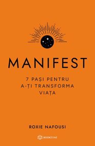

MANIFEST
Roxie Nafousi
„Manifestarea este o îmbinare a științei și a înțelepciunii; este o filozofie de viață și o practică de dezvoltare personală care te ajută să-ți trăiești cea mai bună existență.”
În doar 7 pași simpli, explicați în detaliu, și cu exemple din viața personală a autoarei, poți înțelege cu adevărat arta materializării celor mai profunde dorințe și crearea echilibrului interior.
Fie că vrei să atragi acea relație sănătoasă și partenerul ideal, să obții jobul perfect ori să-ți cumperi casa în care te-ai imaginat dintotdeauna, sau poate doar să înveți să te iubești pe tine și să nu te mai autosabotezi, cartea aceasta îți va arăta concret, pas cu pas, cum poți ajunge acolo, oricare ți-ar fi destinația:
1. Formează-ți o viziune clară
2. Elimină teama și îndoiala
3. Armonizează-ți comportamentul
4. Treci testele Universului
5. Îmbrățișează recunoștința
6. Transformă invidia în inspirație
7. Ai încredere în Univers